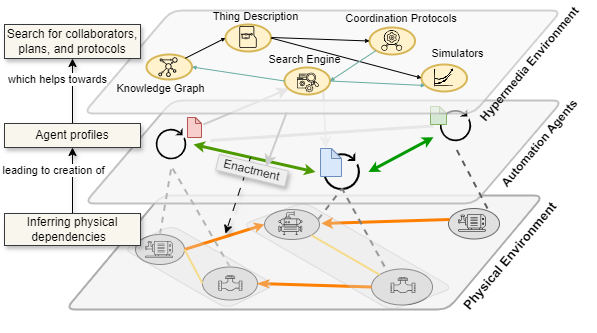

Would rather jump directly to an example? Its here
Looking for the description of the PhyDiT ontology? Its here
Reusable control programs are designed with an aim to lower engineering effort when dealing with "standard" technical systems in a project. Instead of having to write control programs from scratch for a commonly known type of system, one can choose a suitable program from a library and deploy it. But how does one choose such a program? In practice, an automation engineer needs to carefully read the documentation of the program and also of the technical system for this purpose.
This is time-consuming and error-prone. So how can we automate this matchmaking? Intuitively, we know that machine-understandable semantic descriptions can enable domain experts to formulate rules and this can perhaps be used for automatically matching a program to technical system. And, we do already have ontologies based on the Semantic Web technologies to describe technical design and control programs. So why is this not already being done?
When we examined real-life examples, it turns out that the knowledge of the physical processes is important when determining if a control program will indeed achieve the intended goal when working with a technical system. This is in addition to knowing about the structure of the technical system and the sensors and actuators that are available for the program to interact with. However, currently the semantic models of control programs and technical systems are not integrated to the physical process model - at least not in a way that is helpful for matchmaking. So how can we fix this?
We looked at concepts in the three abstractions that are involved and required, i.e., in describing control programs, technical systems, and physical processes. We identified how these individual descriptions should be linked so that given a description of a technical system, an automated choice of control program can be made. Based on our study, we developed an high-level ontology that captures the required bridging concepts.
We first consider two personas. First, the control program designer who studies how technical systems of a given kind (say, boilers) work and based on a generalized understanding develops a program that can be used for systems that conform to the abstract idea of the technical system. And then we have the technical system designer who designs the actual systems and products (while having an idea about how it can be potentially controlled). For the purpose of allowing the technical system to be externally controlled, the designer provides sensors and actuators as interfaces that can be used by a control program.
Traditionally, these two designers document their design, which the automation engineer reads and understands (before deciding that a program is suitable for the system at hand).
As an example exercise, consider the this air handling unit (AHU) system and try to select a suitable control program from this library.
We studied such examples, based on which we propose that technical system designers use ontologies of their choice to describe their design, but in addition, also describe which process variables do the sensors and actuators observe or influence. We also propose that control program desginers similarly describe their generalization of the technical system for which a control program has been conceived. The concepts required to do this are provided by PhyDiT - i.e., it enables description of technical systems, concrete or abstract, to be linked to description of physical processes. It also enables the control program desginer to link the external interfaces of the program (i.e. its IOs) to the external interfaces of the system (i.e., the sensors and actuators)
The (semantic) description of the technical system (which has been linked to the description of the physical process) can now be used to answer questions like "which actuator will cause the temperature of water at the outlet to change?". In other words it has become in a way the digital twin. However, because it is still a raw RDF knowledge graph, to execute such queries one needs to know and understand the ontologies which were used for modeling it. Further, this knowledge does not include information about how to interact with the technical system (for example, how do I (as a software program) actuate the valve? i.e. what signal or network message should I send).
This gap, more precisely, the lack of technical and semantic interoperability, has been addressed by the W3C standard Web of Things. To make the knowledge about the technical system both accessible and operable, we infuse the knowledge in to Thing Descriptions. Therefore given such a Thing Description, I can not only ask the same question but also know how to operate the valve.
Finally, given the description of the control program (which includes the description of the abstract system and the physical process), and given a Thing Description, we can use semantic rules to find out if the control program is suitable to control the technical system.

The ontology can be downloaded here and the documentation is avaialable here.
The schematic below attempts to explain the ontology visually: there are three distinct aspects - the control program, the technical system, and the model of the physical process. The heart of PhyDiT lies in the relationships that integrate these three aspects.
We will resort to an informal narrative in the form of user story to explain how our approach can be practically applied. We take the example of an oil-fired combustion boiler for hot water production which is quite often found in buildings of all sizes and purposes.
Bayo has designed a large 500kW oil-fired boiler (model number HW500), intances of which will be deployed in buildings all over the world. Apart from documenting the design using diagrams and texts, she has semantically described the construction of the boiler using the BRICK ontology (you can find it here) -- the figure below shows the essentials of this description: But we are missing knowledge about the physical process. Even though we (as human experts) know that an instance of brick:Burner means that combustion of fuel is occuring in it, we need to express this in a machine-understandable manner (so that software programs can use the knowledge for logical reasoning). Therefore, Bayo, following our approach describes the physical process using the OntoCAPE ontology. You can find it here and the following figure summarizes the model: Finally, she links the two descriptions by telling which sensors observe which variable, and which actuator manipulates and affects which variable. The linked description is here and the following figure explains it visually: This interlinked knowledge is already valuable. For example, she can formulate semantic queries like this one to find out which actuators influence the water outlet temperature. You can try out this query by loading the Turtle files in this folder to any graph database program that supports SPARQL queries. The description of the boiler in form of a RDF file is deployed in to the embedded system of the boiler where a program like our Thing Description snythesizer can create a WoT Thing Description and infuse it with essential knowledge from the RDF.
Conrad works for a building automation company and has been tasked to design a reusable control program for oil-fired boilers as these are often encountered in buildings. Although Conrad does not design boilers himself, he has studied the design principles (like the one here) and has also examined the design descriptions of many boiler products (perhaps not the one Bayo created). Conrad believes there is sufficient commonality in oil-fired boilers to warrant a generic and reusable control program. For this purpose he documents an abstract design which he considers as the basis for the program he is going to develop. This description can be found here and the visualizaton is as follows: Notice that there are some subtle differences to Bayo's design. Just like Bayo, Conrad realizes that he should also describe the physical process model (RDF is here): Here too there are some differences as compared to Bayo's model. Conrad too follows our approach and links the two description using the relationships provided by PhyDiT. Conrad publishes the control program and its description to a repostitory on the Web.
{
"@context": [...],
"title": "Boiler for heating system",
"@type": "brick:Boiler",
"manages": {"@type":"hvac:EnergyConversion"},
"system-model": "/model/tsd-blr-01.rdf",
"simulation-model":"http://server/boiler.fmu",
"actions": {
"fuel-valve-actuation": {
"title": "Modulate Fuel Flowrate",
"relatedTo": {"@type":"hvac:Combustion"},
"manipulates":{
"stuff":"brick:fuel",
"atComponent": {"@type": "hvac:Burner"},
"position": "elem:inlet",
"quantityKind":"qudt:VolumeFlowRate"
},
"affects":{
"stuff":"brick:water",
"atComponent": {"@type":"hvac:BoilerTube"},
"position":"elem:outlet",
"quantityKind":"qudt:Temperature"
},
"forms": [
{
"op": "invokeaction",
"href": "/actuators/fuel-valve"
}
],
"type": "number", "minimum":0, "maximum":100
}
}....
}
She then copies the Thing Description to an engineering tool called the Control Program Finder, which, in principle uses the semantic rules for matching (available here as SPARQL queries) to find the right control program from the Web repostitory. Aurelia then downloads this program to the automation controller which then binds its IOs to endpoints for sensors and actuators that are described in the Thing Description. Aurelia now has an hour to spare and calls up Bayo to tell how easy it was.